Как играть
При старте игры появляется пустой экран с формой ввода логина и пароля. Указываем логин и пароль и жмём "Войти". Если логин новый, то учётная запись будет создана автоматически. Ограничения на логин и пароль такие: они могут содержать цифры, символы русского и английского алфавита (в том числе и заглавные), скобки, запятую, точку, восклицательный и вопросительный знак.
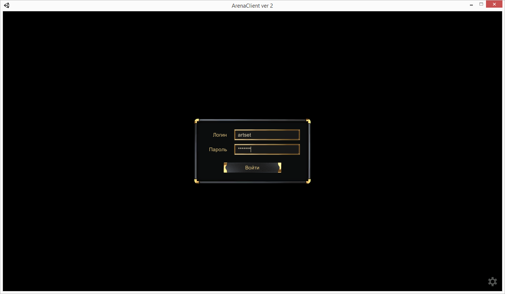Видим окно с выбором персонажа. Если аккаунт был только что создан, то никаких персонажей на нём нет, а есть слева только кнопка создания нового персонажа. Ну и кнопка выхода, конечно же. Жмём "Новый персонаж"
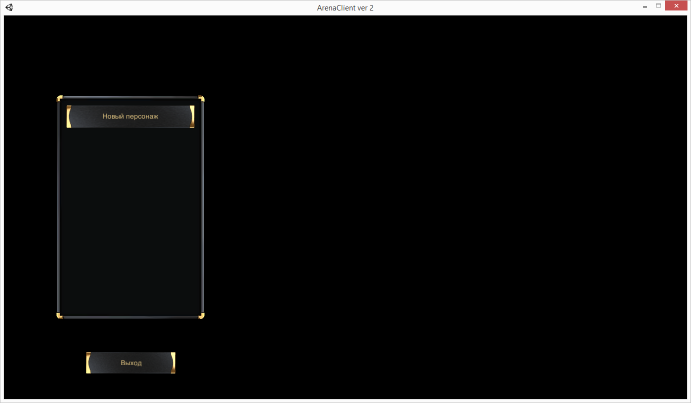В появившемся окне вводим имя персонажа. Какое угодно, пусть будет, к примеру, Крот. А что, имя как имя, не Синица же какая-нибудь. Ограничения на символы имени такие же, как и на пароль с логином. Выставляем параметры персонажа, вкладывая доступные очки в силу, ловкость, интеллект и выносливость. Потом выбираем стихию персонажа. Пол выбирать нельзя. Стихия оказывает влияние на то, какие магические умения будут доступны персонажу. Огненная стихия даёт в основном атакующие заклинания, водная стихия - заклинания лечения, стихия воздуха - такие усиливающие эффекты, как ускорение бега и атаки, стихия земли - защитные заклинания. Впрочем, атакующие заклинания есть в каждой стихии. Жмём кнопку "Создать".
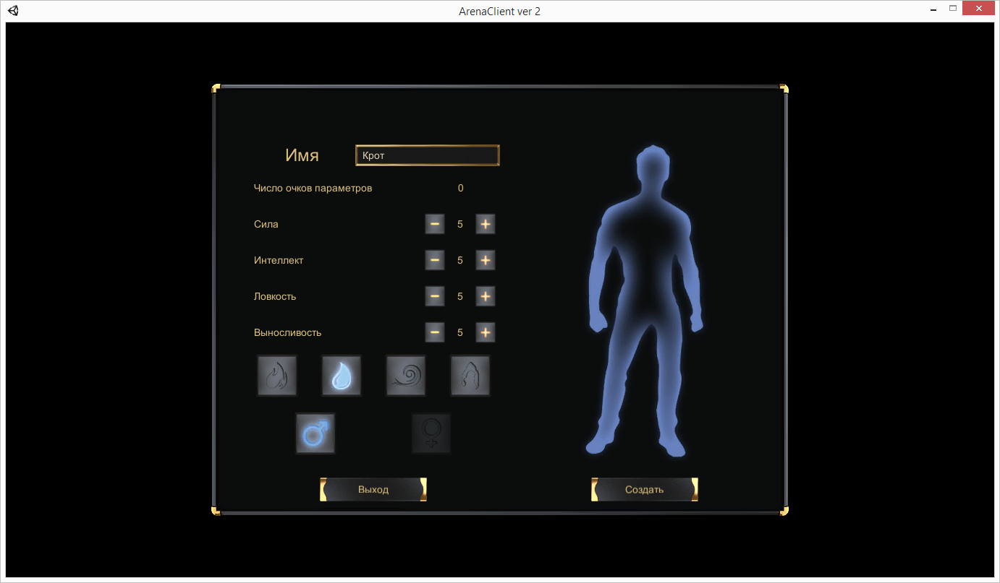Ну всё, теперь в левом списке есть новый персонаж. Рядом с его именем в скобках указан уго уровень. Всего персонажей на аккаунте может быть восемь. Правая панелька показывает параметры выбранного персонажа. Жмём "Войти".
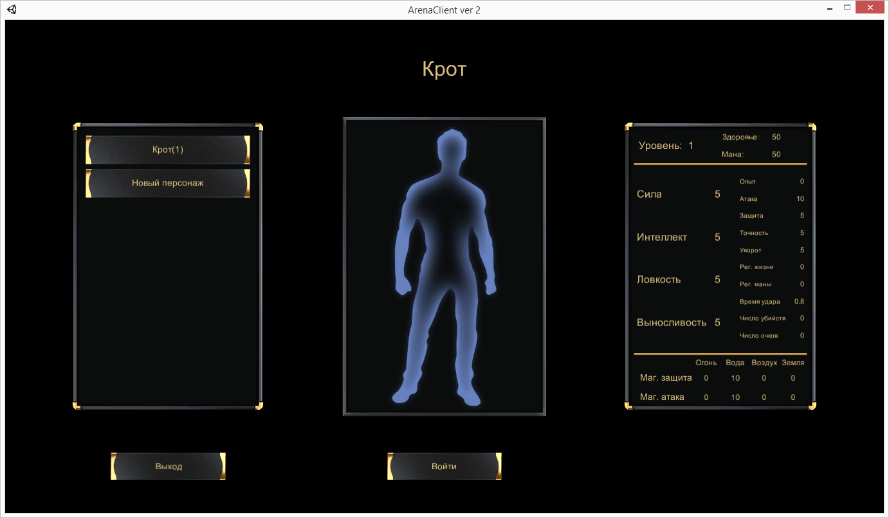Происходит загрузка уровня, и вот мы уже стоит в общей локации, где полным-полно других игроков. Ну, по идее. Они должны там быть. Интерфейс стандартный. Слева вверху полоски жизни и маны. Слева внизу окно чата. Активировать его и отправлять сообщения по нажатию Enter. Вкладки чата показывают сообщения, сгруппированные по разным локациям и группам. Снизу панель скилов. На её правом крае кнопка по переключению режима передвижения с шага на бег и обратно, а также кнопка для блокирования изменений панели (чтобы в пылу битвы с неё мышкой ничего не сбросить). Справа сверху кнопки для выхода из игры, экипировки персонажа, дерева его умений, параметров и инвентаря (перечислено сверху вниз).
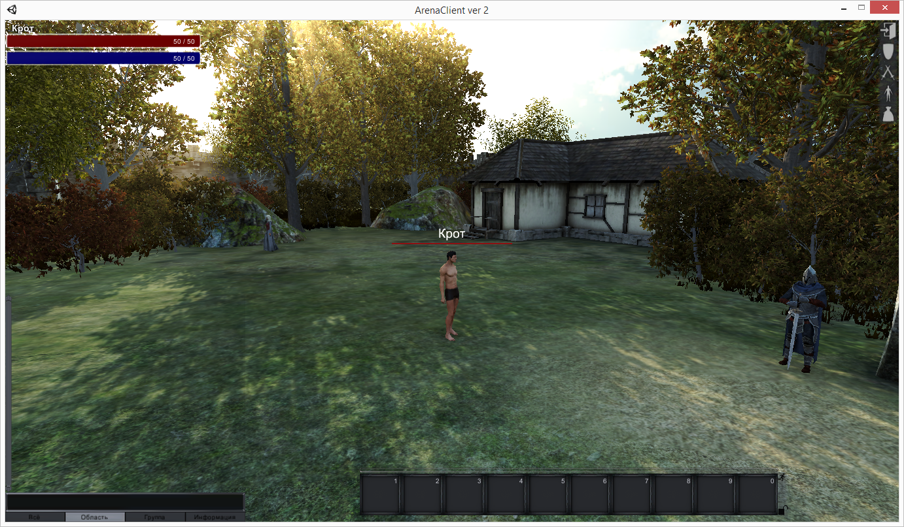Открываем окно умений и видим, что персонажу доступно пять очков, которые можно распределить между доступными умениями. Чтобы повысить умение до следующего уровня (с 1-го до 2-го, к примеру) надо затратить столько очков, каков новый уровень (то есть 2 в нашем примере). Описание умения показывается, если на него нажать правой клавишей.
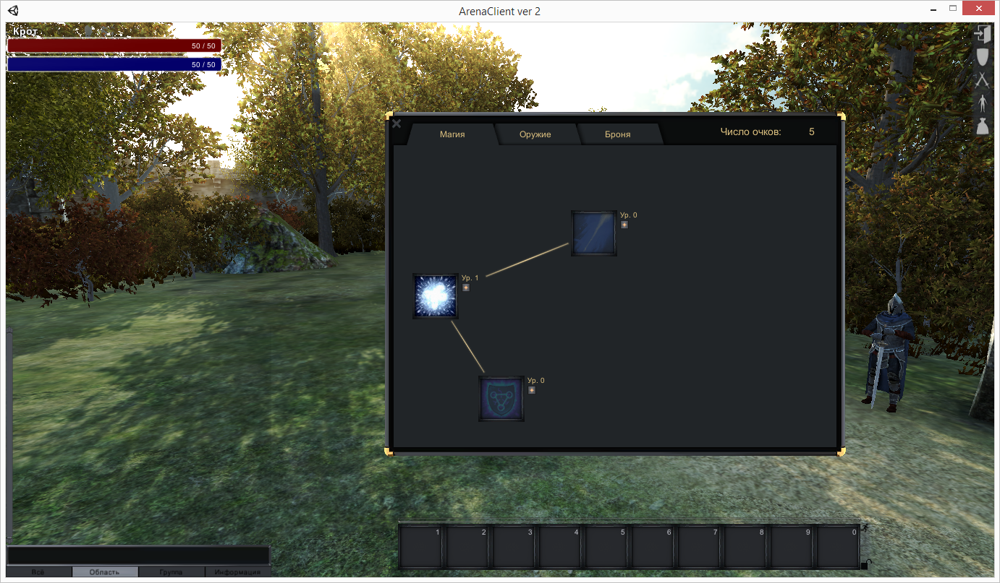В общем учим умения "Касание воды" и "Щит воды" из магического раздела и "Владение посохом" из раздела с оружием. Выносим активные умения на пенель скилов (предварительно её разблокировав). Вообще умения можно вызывать только с этой панели, либо кликнув на них левой клавишей, либо нажав соответствующую цифру на клавиатуре.
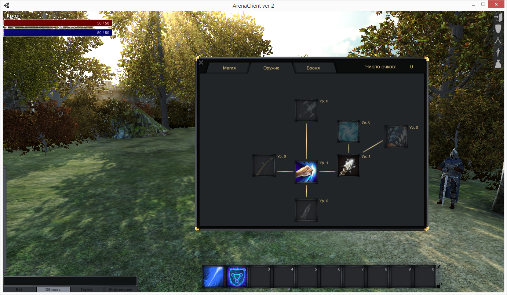Персонаж 1-го уровня - лёгкая добыча для негодяев. Даже не смотря на то, что у него такое доблестное имя. Поэтому чтобы стать чуть сильнее бежим к NPC-торговцу по имени "Оружейник". Он мужик простой и продаёт всякое оружие. Покупаем посох. Мы же умеем им управляться. Покупать легко: клик на вещи, потом на кнопке "Купить".
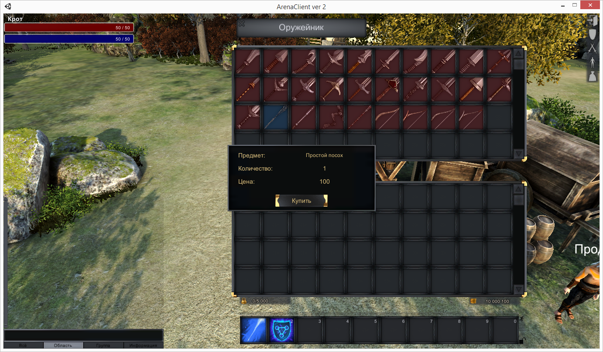Дальше подбегаем к NPC-соседу с таким же странным именем "Бронник". Покупаем самые простые сапоги и перчатки. Остальные вещи помечены красным. Это означает, что их пока нельзя использовать. Параметров персонажа не хватает.
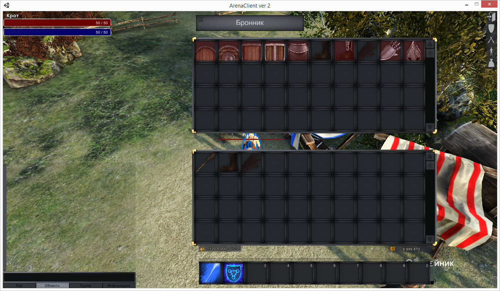Вызываем окно с экипировкой персонажа и перетаскиваем перчатки с сапогами в соответствующие слоты. Открыв окно с параметрами персонажа можно увидеть, что описание предметов не врёт и параметры изменяются ровно так, как написано. Чтобы снять предмет его надо перетащить в свободную ячейку инвентаря.
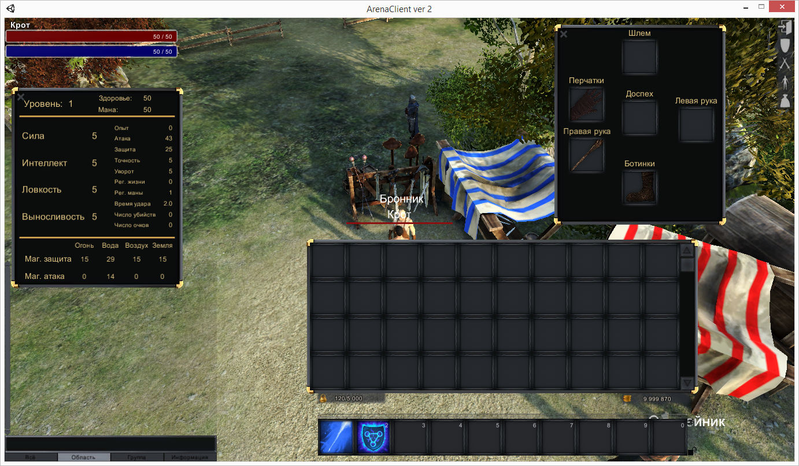Вот теперь мы готовы отправляться на поиски приключений. Бежм к NPC со странным (не иначе как иностранным) именем "Распорядитель". Родители хотели, наверное, назвать её "Распорядитель подземелий", но в свидетельство о рождении такое длинное имя не влазило, вот и пришлось назвать покороче. Только она умеет телепортировать в подземелья.
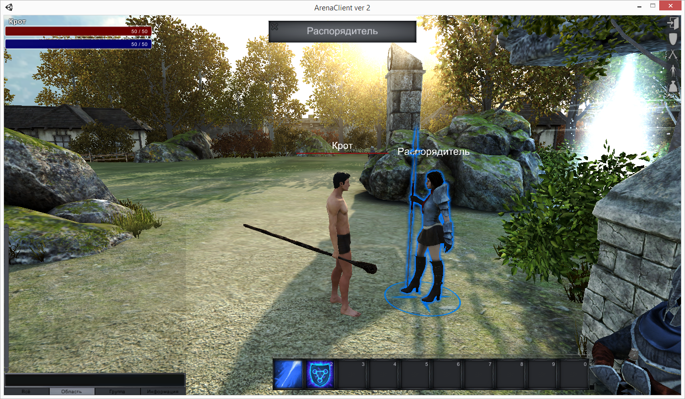В общем жмём по NPC два раза и открывается окно с доступными подземельями. Выбираем самое первое и жмём "Войти". Там, в принципе, рядом написаны разные параметры: какой уровень персонажа нужен, сколько человек, сколько денег заработает каждый, если выживет. После того, как уровень загрузился, мы оказываемся в подземелье, где бродят враги. Иначе не скажешь, ведь у них красные надписи над головами. А наш персонаж, значит, свой, ведь у него надпись зелёная.
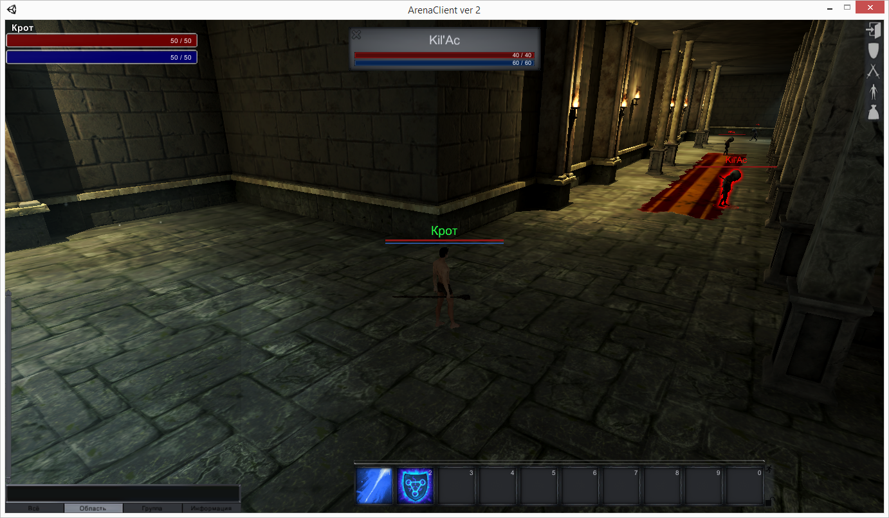Дальше всё просто. Бежим, колотим врагов. Используем как изученные заклинания, так и врукопашную кидаемся. Мана восстанавливается по единице в секунду. Жизнь не восстанавливается. Поэтому надо быть осторожными. Но если персонаж умрёт, то ничего страшного. Опыт и деньги не теряются, только сам перемещается в начальную точку подземелья.
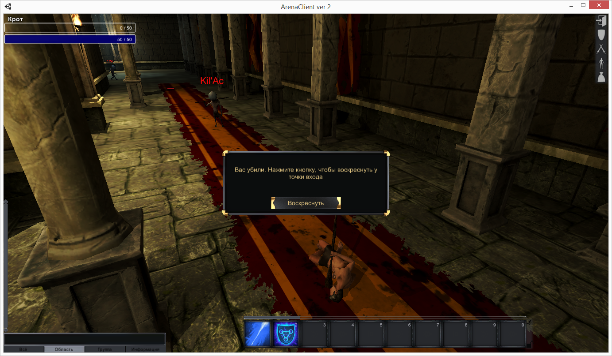Единственный способ выйти из подземелья - это убить в нём всех врагов. Ещё можно выйти совсем из игры, но это не честно. После того, как все враги будут убиты, появится портал, с помощью которого можно телепортироваться обратно в город.
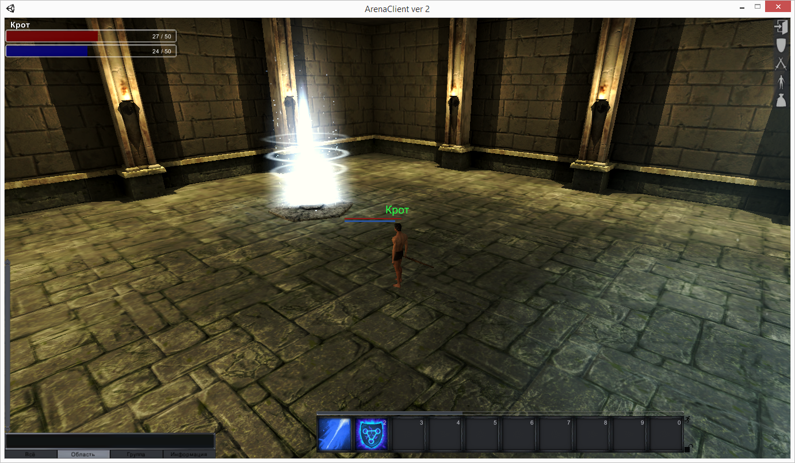Этот портал вроде NPC. Подбегаем к нему и появляется окошко, в котором можно забрать весь дроп с врагов. Дело в том, что после каждого убийства с каждого врага что-то падало с какой-то вероятностью. Но узнать что и сколько можно только, подойдя к этому порталу. Забираем всё (всё, что есть, нечего тут) и телепортируемся в город.
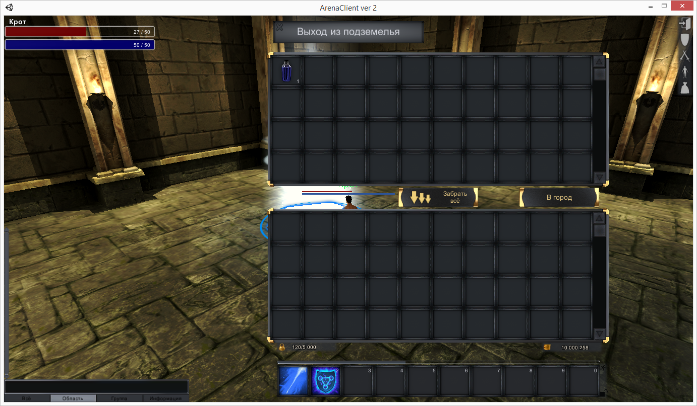Ну всё, подземелье пройдено, мы снова на поверхности. Пока денег много, можно подойти к NPC-торговцу "Продавец зелий" (тоже не повезло с родителями, назвали чёрти-как) и купить какие-нибудь эликсиры. Их описание смотрится всё так же, с помощью нажатия правой клавиши мыши.
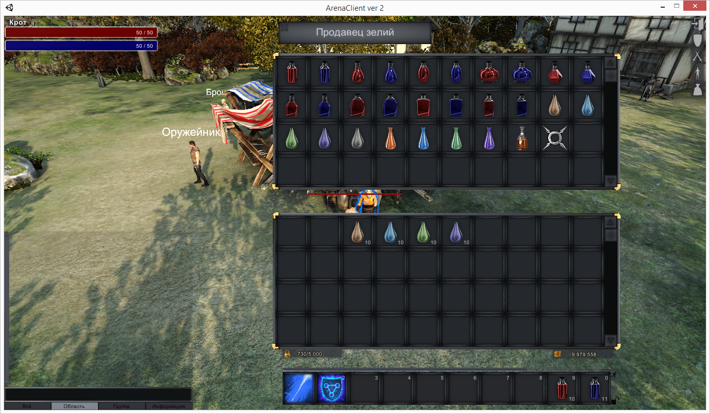